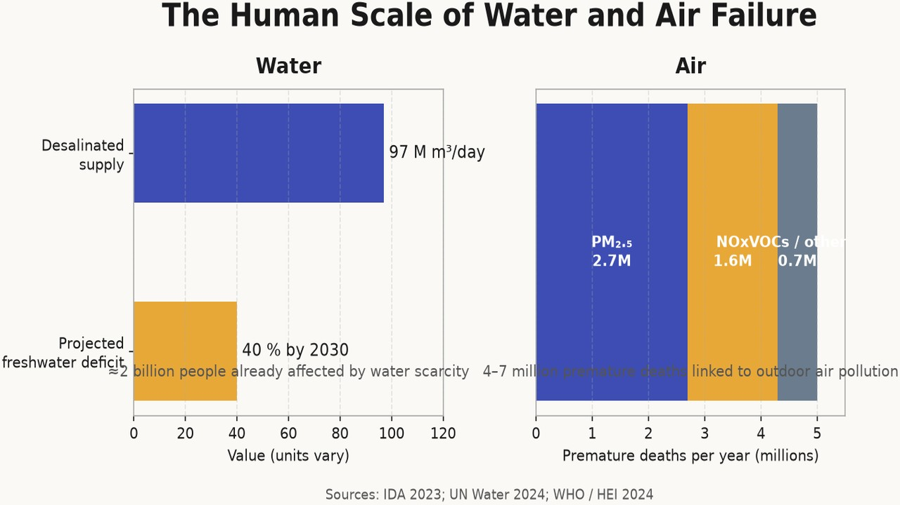
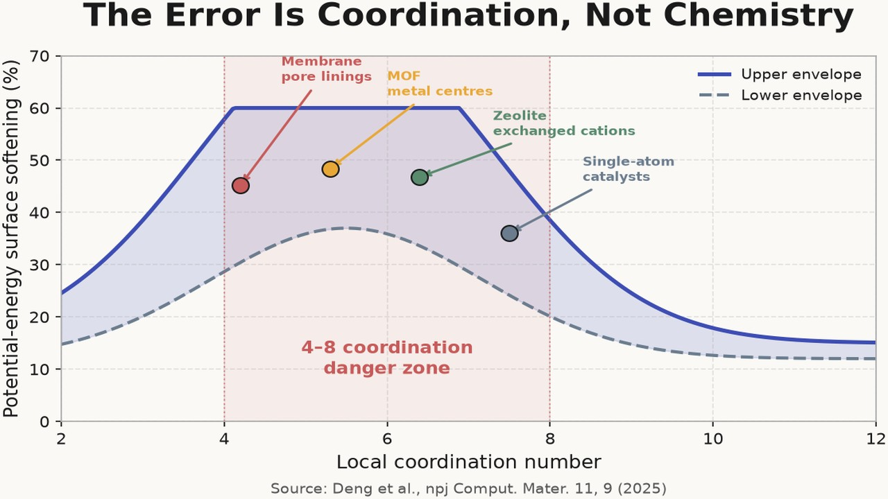
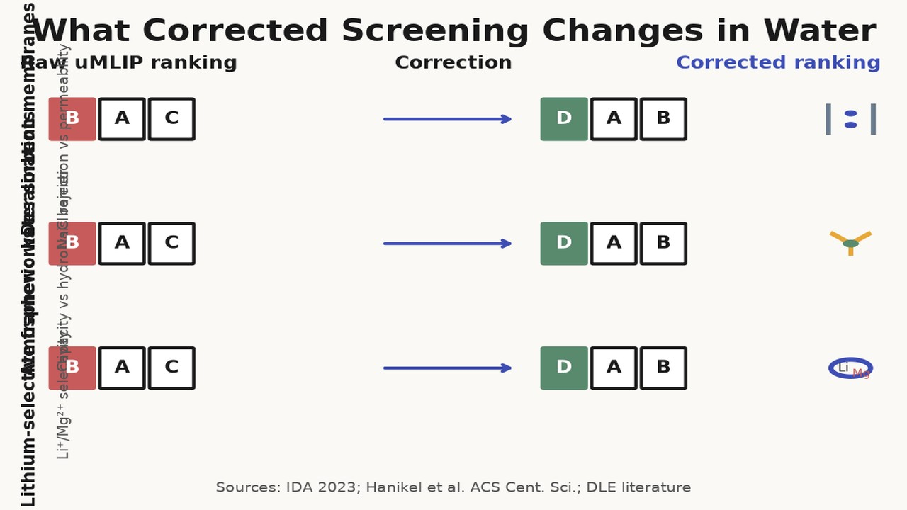
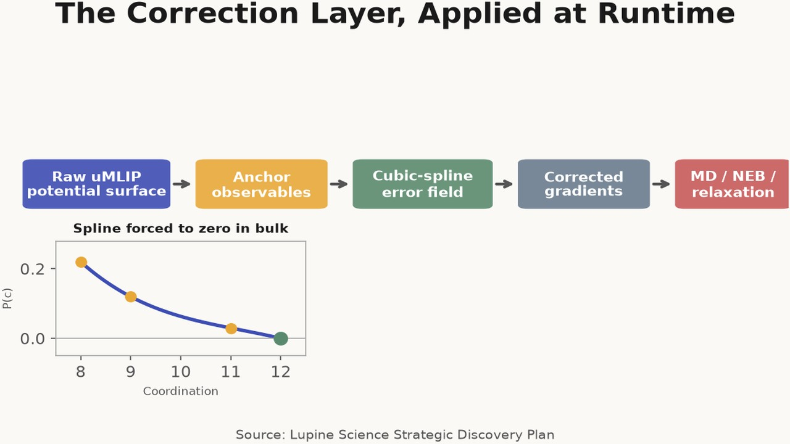
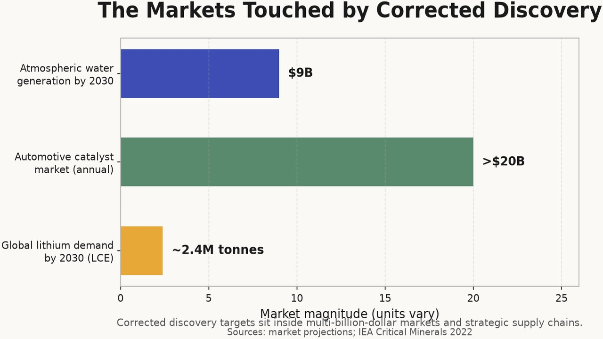
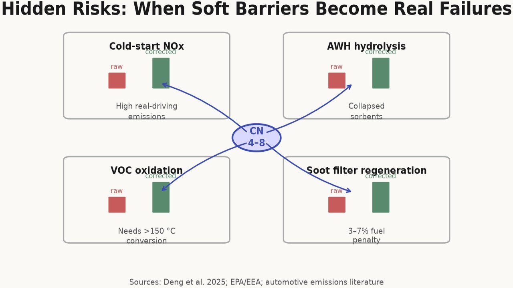
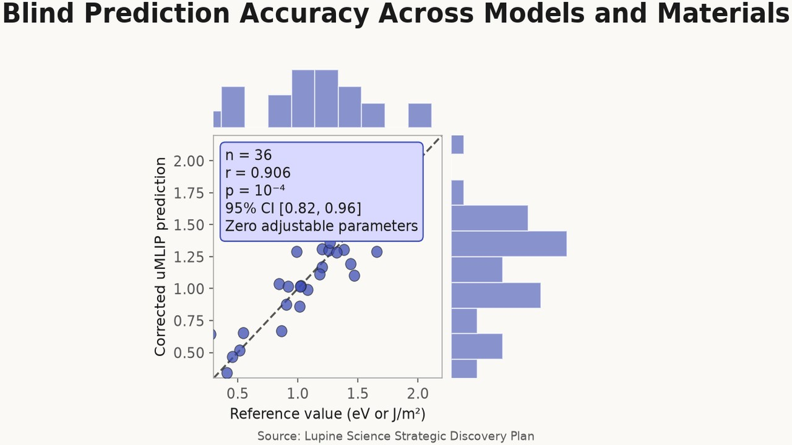
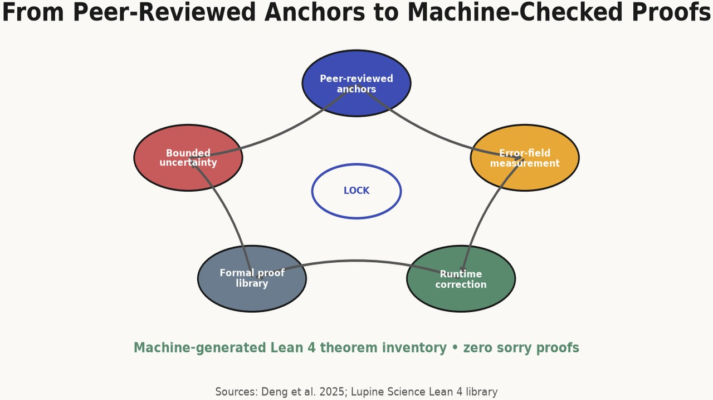
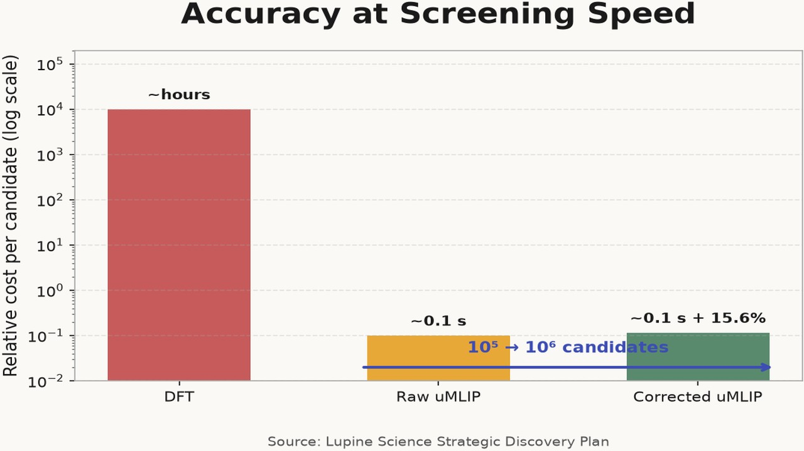
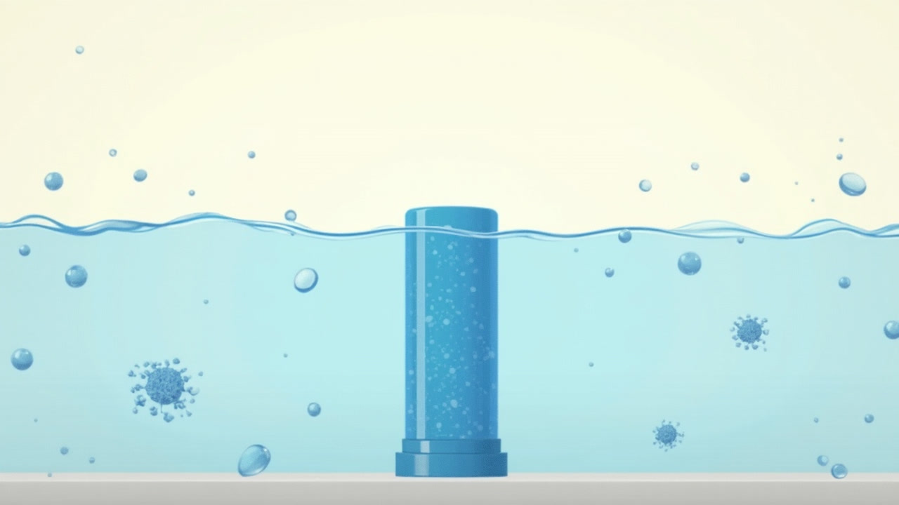

Water and Air: Correcting the Molecules We Drink and Breathe
article
How corrected uMLIPs recover accurate binding and barrier predictions for water desalination, atmospheric harvesting, lithium-selective extraction, and air-quality catalysts.

Water and air are the two environmental systems that touch every human life. We drink water, breathe air, and depend on engineered materials to keep both clean enough to sustain cities, agriculture, and industry. The global reverse-osmosis fleet already produces roughly 97 million cubic metres of desalinated water per day[1], yet water scarcity still affects about two billion people and the UN projects a 40% global freshwater deficit by 2030 under business-as-usual[2]. Outdoor air pollution, meanwhile, is linked to an estimated 4–7 million premature deaths each year, with NOx, fine particulates, and volatile organic compounds as the dominant contributors[3].

Both problems are materials-limited, and both are corrupted by the same computational error. The membranes, sorbents, ion-selective frameworks, and catalysts that would solve them all function in under-coordinated, non-equilibrium atomic environments — pore windows, metal-linker interfaces, exchanged cations, single-atom sites — that universal machine-learning interatomic potentials (uMLIPs) systematically misrepresent. This article walks through the water and air targets from Lupine’s environmental-expansion map, explains why raw uMLIPs misrank the candidates, and shows how a measured environment error field recovers predictions that are fast enough to screen and verified enough to trust.
The error is coordination, not chemistry
The central finding of the climate series was not that battery cathodes are hard. It was that uMLIPs are trained on bulk, equilibrium configurations where every atom has a high, regular coordination number, then asked to predict behaviour at surfaces, vacancies, and transition states where coordination is low. A recent systematic survey of leading uMLIPs shows the consequence: in under-coordinated environments the potential energy surface is softened by 15–60%, with the largest errors at coordination numbers between four and eight[4]. That is exactly the coordination regime of a membrane pore lining, a MOF metal centre, a zeolite exchanged cation, or a single-atom catalyst.

The error has a shape. It grows as coordination drops and as local chemistry deviates from the training distribution. For water and air materials this means that binding energies, diffusion barriers, hydrolysis rates, and activation barriers are all shifted in a regular, predictable way — but a way that ordinary uMLIP screens do not correct. The result is ranking inversion: candidates that look best in a raw screen are often not the candidates that would perform best if the potential surface were accurate. Experiments are sent to false priorities, and better materials stay on the bench.
Lupine’s response is to measure the error field on anchor observables, add analytic forces to the uMLIP gradients at runtime, and verify the supported claims with machine-checked proof[5]. The correction is not domain-specific; it is coordination-specific. That is why the same field transfers from battery cathodes and direct-air-capture MOFs to the water and air targets discussed here.

Water: separation without energy destruction
Reverse-osmosis membranes
Reverse osmosis is the workhorse of seawater desalination, but it is still energetically expensive and chemically fragile. A modern polyamide thin-film composite membrane reaches roughly 99.5% NaCl rejection at a permeability of about 10 L m⁻² h⁻¹ bar⁻¹, with total energy consumption of 3–4 kWh m⁻³[1:1]. The next generation of membranes needs higher permeability without sacrificing rejection, and it needs chlorine tolerance so that biofouling can be controlled without damaging the active layer.
The active layer is a nanoporous polymer network. Its function is controlled by the size, charge, and chemical texture of pores that are only a few nanometres across. Ions and water molecules in those pores are surrounded by under-coordinated functional groups — carbonyls, amines, carboxylates — whose binding energies fall well outside the bulk-polymer distribution on which uMLIPs are trained. A raw uMLIP therefore misranks pore size and charge density, making it impossible to screen candidate chemistries for the true selectivity–permeability trade-off. Corrected binding and diffusion energies recover the right ranking, so synthesis effort goes to pores that are genuinely selective rather than pores that merely look stable on a softened potential surface.

Atmospheric water harvesting
Atmospheric water harvesting (AWH) offers a distributed alternative to centralised desalination for off-grid and drought-resilient supply. The best sorbents are metal–organic frameworks that can capture water vapour at low relative humidity and release it with modest heating. MOF-808 loaded with LiCl, for example, can deliver capacities approaching 0.25 g g⁻¹ at 20% relative humidity[6]. The target for a practical device is higher capacity, faster cycling, and stability over thousands of adsorption–desorption cycles.
The cycle-life limit is hydrolysis. Water sorption and desorption repeatedly stress metal–linker bonds at under-coordinated metal centres, coordination numbers four to seven, where uMLIPs underestimate dissociation barrier heights by the same 15–60% seen in other MOF failure modes[4:1]. A candidate framework that looks hydrolytically stable in a raw screen may collapse in weeks, while a more robust framework is discarded because its barrier looks too high. Corrected hydrolysis barriers predict cycle life before synthesis, and the same correction that Lupine applied to humidity-stable direct-air-capture MOFs transfers directly to AWH sorbents[5:1].

Ion-selective frameworks for lithium recovery
Lithium recovery from brine is critical to battery supply chains. Conventional evaporation ponds recover only 30–50% of lithium over 12–24 months and consume enormous volumes of water[7]. Direct lithium extraction aims to raise recovery above 80% and reduce residence time to hours, but the selective sorbents and membranes that would make it economical do not yet exist at scale.
The selectivity problem is hard because divalent Mg²⁺ binds more strongly than monovalent Li⁺ to most oxygen and nitrogen sites. Selective transport therefore requires size-sieving windows or weak-field binding pockets with precise coordination geometry. Crown-ether membranes and λ-MnO₂ sorbents achieve Li⁺/Mg²⁺ selectivity in the range of 10–50, but the target is above 100 with permeance above 10⁻⁶ mol m⁻² s⁻¹[8]. In MOF windows and 2D membrane pores, the guest-ion binding energies and migration barriers are set by under-coordinated pore environments that raw uMLIPs misrank. Corrected Li⁺ and Mg²⁺ site energies identify selective diffusion pathways that would otherwise be buried in the false ordering produced by bulk-trained potentials.
The commercial pressure is rising. Global lithium demand is projected to reach about 2.4 million tonnes of lithium carbonate equivalent by 2030, driven almost entirely by batteries for electric vehicles and grid storage[9]. Most of that lithium will still come from brine or hard-rock deposits if direct lithium extraction does not scale. Selective sorbents and membranes discovered with corrected binding energies are one of the few routes that can both expand supply and reduce the water and land footprint of extraction.

Air: catalysts for the molecules we breathe
Low-temperature NOx reduction
Transportation is the dominant source of NOx in urban areas, and the problem is worst before the exhaust catalyst warms up. Cold-start emissions can account for 50–80% of total trip NOx because the Cu-SSZ-13 selective catalytic reduction catalyst only reaches high conversion above roughly 200 °C[10]. A catalyst that delivered 90% NOx conversion below 150 °C, and survived H₂O and SO₂, would cut real-driving emissions far more than incremental improvements at operating temperature.
The chemistry depends on adsorption and redox energetics at exchanged Cu²⁺/Cu⁺ cations inside the zeolite pores. These sites are under-coordinated relative to bulk oxide reference states, and the N–O bond activation barriers that control low-temperature activity fall in the coordination regime where uMLIPs soften the potential surface. Corrected adsorption and redox energies filter out false-positive formulations and identify promoters — Ce, Zr, rare earths — that stabilise active sites against hydrothermal ageing and sulfur poisoning.
Particulate filters
Diesel and gasoline direct-injection engines emit fine soot particles that are captured by ceramic filters, typically silicon carbide or cordierite. The filters work, but regeneration — periodic burning of the accumulated soot — imposes a fuel penalty of 3–7% and must stay below about 500 °C to avoid substrate damage[11]. A catalysed filter that oxidised soot at lower temperature, with lower backpressure and sub-10 nm particle penetration, would reduce both fuel consumption and urban PM₂.₅.

The design problem is soot oxidation on catalysed channel walls. The reaction involves O₂ activation and carbon gasification at under-coordinated metal and oxide sites where raw uMLIPs misestimate barriers. Corrected soot-oxidation barriers rank catalyst coatings by true activity, not by the softened activity that makes every candidate look more promising than it is.
VOC oxidation
Volatile organic compounds from building materials, furnishings, and industrial processes contribute to both indoor air quality and outdoor ozone formation. Formaldehyde and benzene are particularly important because they are common, hazardous, and difficult to oxidise at room temperature. Supported Pt and Pd catalysts can achieve high conversion, but many require temperatures above 150 °C[12]. A catalyst that oxidised formaldehyde and benzene below 100 °C would open markets in building materials, consumer purifiers, and industrial abatement.

The limiting steps are C–H and O=O activation at single-atom or small-cluster sites on oxide supports. These are the same under-coordinated active sites that dominate low-temperature SCR and soot oxidation. Single-atom catalysts are especially sensitive: if the metal binds the support too weakly it sinters; too strongly it becomes inactive. Corrected metal-support binding energies prevent both failures, and corrected C–H/O₂ activation barriers filter formulations that only appear active because their barriers have been artificially lowered.
The correction layer, applied
The Lupine environment error field is constructed from three anchor observables and a cubic spline that enforces zero error in a reference bulk environment[5:2]. For water and air materials, the field is evaluated at the same low-coordination environments that control function: the pore window that selects Li⁺ over Mg²⁺, the metal-linker bond that hydrolyses during AWH cycling, the exchanged cation that activates NOx, the single-atom site that oxidises formaldehyde.

Runtime correction adds analytic forces to the uMLIP gradients. Molecular dynamics, nudged-elastic-band calculations, and high-throughput relaxations therefore follow the corrected potential energy surface, not the raw one. Blind prediction across 36 (model, material) combinations achieved Pearson r = 0.906 (p = 10⁻⁴, 95% CI [0.82, 0.96]) with zero adjustable parameters[5:3]. Corrected uMLIPs remain roughly 10⁵× faster than DFT, which is what makes 10⁵–10⁶ candidate screens economically feasible.
Formal verification matters because correction without proof can become a new kind of false confidence. Lupine’s supported claims are accompanied by build-locked Lean 4 theorems; the current library contains 77 theorems with zero sorry proofs[5:4]. In the water and air context, this discipline means that a membrane pore ranking is supported only when the relevant local environments fall inside the measured domain; a metastable hydrate or an amorphous sorbent phase is flagged as synthesis-dependent rather than sold as predicted. The system proves impossibility or bounded uncertainty where it cannot prove a number.
From point fixes to a platform
The water and air targets share a single conclusion with the rest of the environmental-expansion map. The materials bottleneck is a prediction-trust bottleneck. Membrane selectivity, sorbent cycle life, ion selectivity, cold-start catalyst activity, soot oxidation, and VOC conversion all depend on energies in under-coordinated environments. Raw uMLIPs are fast enough to search the relevant composition spaces but inaccurate enough to misrank them. DFT is accurate enough for individual candidates but too slow to search. A measured correction field, applied at runtime and backed by machine-checked proof, is the missing layer.
The scale justifies the effort. Better membranes and atmospheric-water sorbents would reduce the energy and infrastructure cost of freshwater supply. Selective lithium extraction would ease the mineral constraint on batteries while using far less water and land than evaporation ponds. Low-temperature exhaust and VOC catalysts would cut the air-pollution burden that causes millions of premature deaths each year. The global atmospheric water generator market is projected at roughly $9 billion by 2030, the automotive catalyst market already exceeds $20 billion annually, and the push for domestic battery supply chains is turning brine lithium into a strategic resource. None of these outcomes depends on inventing a new physical law. They depend on finding materials whose function is already dictated by atomic-scale binding and barrier energies, and on computing those energies correctly.

Lupine’s correction-and-verification method was built for climate-critical materials, but the failure modes it addresses are not climate-specific. They are coordination-specific. Water and air are the next natural application because the same pores, metal centres, and active sites that determine battery performance and direct air capture also determine what we drink and what we breathe. The platform thesis is that one correction layer, measured once and verified formally, can raise the reliability of discovery across all of them.
Footnotes
International Desalination Association, IDA Global Desalination Inventory (2023); G. Micale, L. Rizzuti, and A. Cipollina, Seawater Desalination: Conventional and Renewable Energy Processes, Springer, 2009. ↩︎ ↩︎
UN Water, United Nations World Water Development Report 2024: Water for Prosperity and Peace, UNESCO, 2024. ↩︎
World Health Organization, Ambient Air Quality and Health fact sheet (2024); Health Effects Institute, State of Global Air 2024. ↩︎
B. Deng et al., “Systematic softening in universal machine learning interatomic potentials,” npj Computational Materials 11, 9 (2025). https://doi.org/10.1038/s41524-024-01500-6 ↩︎ ↩︎
Lupine Science, Strategic Discovery Plan, Sections 2–3. The plan documents the environment error field, the r = 0.906 blind-prediction result, the 15.6% runtime overhead, the 77 build-locked Lean 4 theorems, and the boundary conditions for impossibility proofs. ↩︎ ↩︎ ↩︎ ↩︎ ↩︎
N. Hanikel et al., “Evolution of water-harvesting systems in metal-organic frameworks,” ACS Central Science review literature on MOF hydrolysis and cycling stability (2019–2024). ↩︎
Direct lithium extraction technology reviews; conventional evaporation-pond recovery and water-consumption estimates from DLE industry assessments and Benchmark Mineral Intelligence. ↩︎
Crown-ether membrane and λ-MnO₂ sorbent performance: literature on Li⁺/Mg²⁺ separation, including selectivity and permeance targets for direct lithium extraction. ↩︎
International Energy Agency, The Role of Critical Minerals in Clean Energy Transitions, IEA, 2022; IEA Global EV Outlook lithium-demand projections. ↩︎
U.S. Environmental Protection Agency and European Environment Agency NOx inventories; automotive emissions literature on cold-start contribution to trip emissions and Cu-SSZ-13 NH₃-SCR catalyst light-off behaviour. ↩︎
Diesel and gasoline particulate filter literature on silicon carbide and cordierite substrates, regeneration temperature, and fuel penalty estimates. ↩︎
Supported noble-metal VOC oxidation catalyst literature on formaldehyde and benzene conversion temperatures for Pt/Pd catalysts. ↩︎